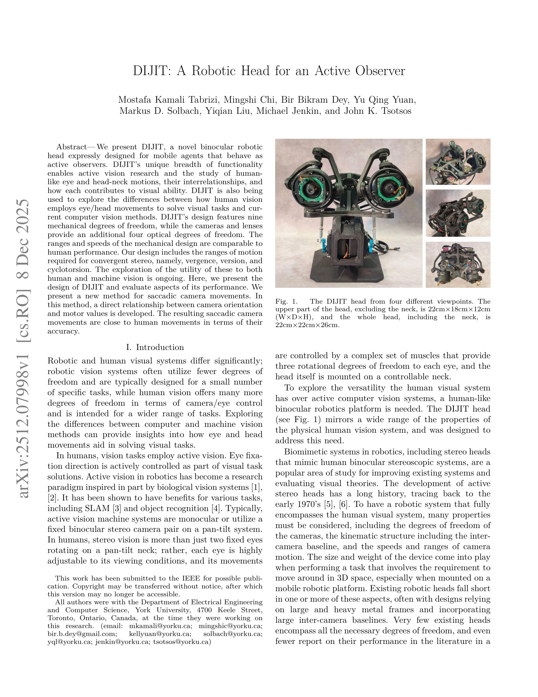

저자: Mostafa Kamali Tabrizi, Mingshi Chi, Bir Bikram Dey, Yu Qing Yuan, Markus D. Solbach, Yiqian Liu, Michael Jenkin, John K. Tsotsos | 날짜: 2025-12-08 | URL: https://arxiv.org/abs/2512.07998

Fig. 1.
인간의 시각 체계를 모방한 생체모방 쌍안 로봇 헤드 DIJIT를 제시하며, 9개의 기계적 자유도와 4개의 광학적 자유도를 통해 능동적 시각 연구와 인간 시각의 안구-머리 운동을 탐구한다.
Fig. 1.
총평: DIJIT은 인간 시각의 핵심 특성을 종합적으로 구현한 최초의 로봇 헤드로, 생체모방 설계와 실제 saccade 성능 평가를 통해 능동 시각 연구의 새로운 플랫폼을 제공한다. 완전 공개된 설계와 체계적인 비교 분석은 후속 로봇 시각 연구에 중요한 기여를 할 수 있다.